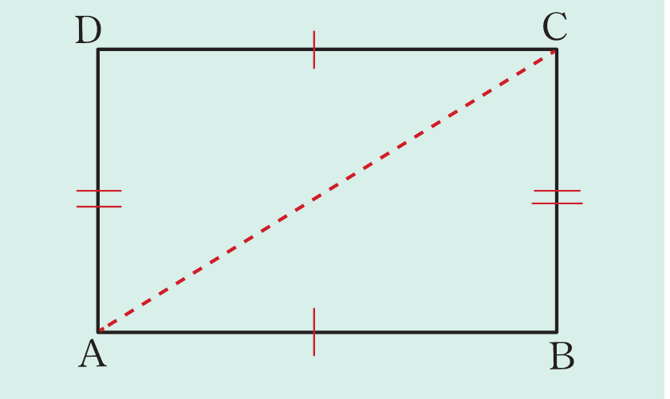
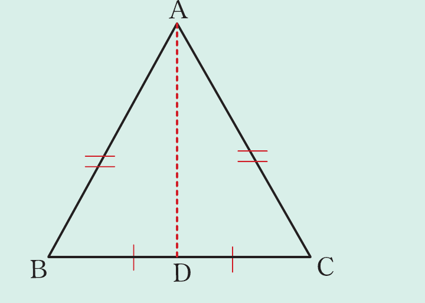

From Figure 2.2, it follows that
Since the pairs of the corresponding sides of triangles ABC and PQR are equal, then the two triangles are exactly the same. Therefore, it follows that,
Since the two triangles are congruent, it implies that, their corresponding angles are also equal, that is,
Example 2.4
Use the following figure to prove that

Solution
Given, a rectangle ABCD in which
Construct a line joining A and C.
Proof: From △ABC and △CDA
AC is a common side to both triangles.
(definition of congruent triangles).
Example 2.5
Triangle ABC is an isosceles triangle in which AB and AC are equal. If D is the midpoint of BC, prove that △ABD ≅ △ACD.
Solution
Consider the △ABC such that AB = AC and D is a mid-point of BC as shown in the following figure.

Required to prove that △ABD ≅ △ACD.
Construction: Use a dotted line to join the points A and D.
Proof: In △ABD and △ACD
AD is a common side to both triangles.
Therefore,